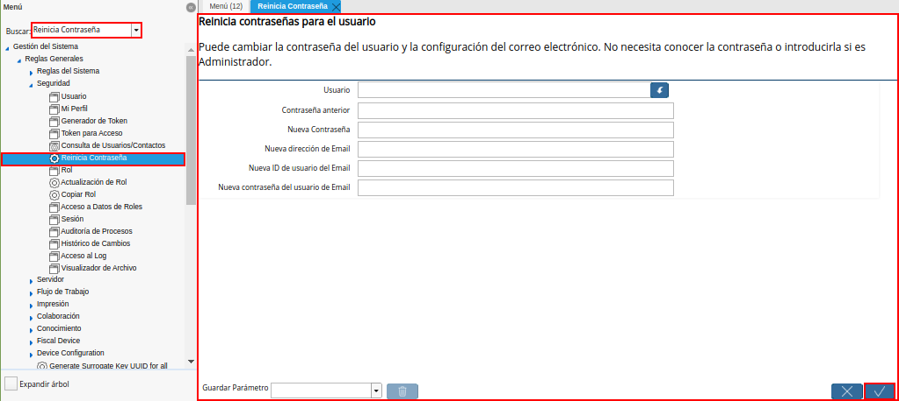
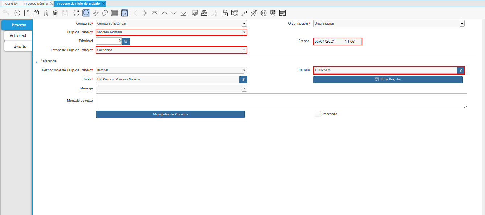

Utilería
En ADempiere la utilería no es más que un conjunto de instrumentos o herramientas que tienen algún tipo de utilidad, es decir, que sirven para un fin en específico, a continuación se definen cada uno de ellos.
Buscar: Le permitirá realizar una búsqueda de un documento en específico.
Imagen 1. Buscar

Calculadora: En ADempiere contamos con una herramienta básica que le permitirá realizar una operación matemática dentro de un campo.
Imagen 2. Calculadora

Reinicia Cache: Permitirá cerrar todas las ventanas, para reiniciar cache ingrese reinicia caché en el buscador rápido del menú explicado anteriormente y reinicie.
Imagen 3. Reiniciar Cache

Reinicia Contraseña: Permitirá cambiar la contraseña del usuario, para reiniciar contraseña ingrese reinicia contraseña en el buscador rápido del menú explicado anteriormente y reinicie.

Imagen 4. Reiniciar Contraseña
Flujo de Trabajo Activo: Cuando se genera el siguiente mensaje como consecuencia de un flujo de trabajo activo en ADempiere.
Imagen 5. Flujo de Trabajo Activo
Es necesario anular dicho flujo de trabajo. Para ello se debe realizar el siguiente procedimiento.
Seleccione el icono “Flujos de Trabajos Activos”, ubicado en la barra de herramientas de la ventana en la cual fue presentado el mensaje de flujo de trabajo activo.
Imagen 6. Icono Flujo de Trabajo Activo
Note
En ADempiere, el flujo de trabajo activo es aquel que en el campo “Estado de Flujo de Trabajo”, de la ventana “Proceso de Flujo de Trabajo”, se encuentra la opción “Corriendo”.
Podrá visualizar la ventana “Proceso de Flujo de Trabajo”, con el registro del flujo de trabajo activo.

Imagen 7. Flujo de Trabajo a anular
Luego de haber ubicado el flujo de trabajo activo, debe seleccionar la opción “Manejador de Procesos”.
Imagen 8. Opción Manejador de Procesos
Podrá visualizar la ventana “Manejador de Procesos”, que se utiliza para actualizar o detener el proceso de flujo de trabajo.
Imagen 9. Ventana Manejador de Procesos
Seleccione el check “Anular Proceso”, para anular el flujo de trabajo.
Imagen 10. Check Anular Proceso
Finalmente, seleccione la opción “OK”, para ejecutar la acción requerida de acuerdo a lo indicado en la ventana “Manejador de Procesos”.
Imagen 11. Opción OK


En el caso de que continue el mismo mensaje de flujo de trabajo activo, ubique nuevamente el registro de flujo de trabajo, con la ayuda del icono “Flujos de Trabajos Activos”, desde la ventana en la cual fue presentado dicho mensaje. Posteriormente podrá visualizar la ventana “Proceso de Flujo de Trabajo”, con el registro del flujo de trabajo activo.
Imagen 12. Flujo de Trabajo a anular
Seleccione la pestaña “Actividad”, para visualizar el registro que se encuentra en estado “Terminado”.
Imagen 13. Flujo de Trabajo
Luego seleccione la opción “Manejador de Actividades”.
Imagen 14. Opción Manejador de Actividades
Podrá visualizar la ventana “Manejador de Actividades”, que se utiliza para actualizar o detener la actividad del flujo de trabajo.
Imagen 15. Ventana Manejador de Actividades
Seleccione el check “Anular Proceso”, para anular el flujo de trabajo.
Imagen 16. Check Anular Proceso
Finalmente, seleccione la opción “OK”, para ejecutar la acción requerida de acuerdo a lo indicado en la ventana “Manejador de Actividades”.
Imagen 16. Opción OK